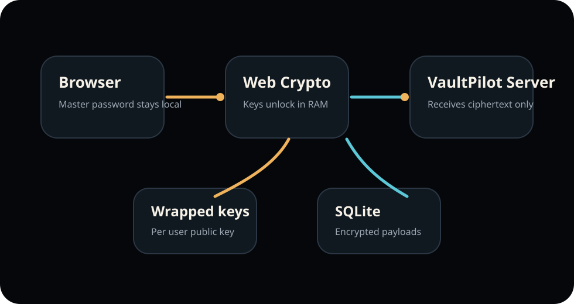

Current stable
PassMan 1.5.3
Use the latest GitHub Release for customer installs and updates. Release assets live in GitHub Releases, not in the git tree.
 PassMan
Enterprise Vault Console
PassMan
Enterprise Vault Console
README
PassMan is a self-hosted, zero-knowledge enterprise password and secrets vault for Windows Server. This public repository contains customer-safe documentation, release notes, update metadata links and knowledge-base entries. Product source code and signing operations stay private.
Current stable
Use the latest GitHub Release for customer installs and updates. Release assets live in GitHub Releases, not in the git tree.
Update channel
PassMan validates the signed manifest, SHA-256 checksums, file metadata and MSI signer thumbprint before exposing an update in the application.
Component map
| Component | Version | Delivery | Operator action |
|---|---|---|---|
| PassMan Enterprise Vault Console | 1.5.3 | Windows MSI | Install or update server |
| Chromium browser extension | 3.1.8 | Managed rollout or ZIP fallback | Pair approved browsers |
| Offline Share Decrypter | 1.2.0 | Release ZIP and MSI support component | Open external packages locally |
| PassMan DC Agent Service | 1.0.10 | Release PowerShell installer and MSI support component | Sync Active Directory scope |
Documentation
Trust boundary
Secret payloads are encrypted before storage. Unlock state and derived key material are limited to the active browser session, while the server stores ciphertext and metadata.

Support boundary
Public support can use versions, timestamps, redacted logs and status messages. Never upload secrets, agent tokens, databases, private keys, certificate packages or customer data.
Knowledge base